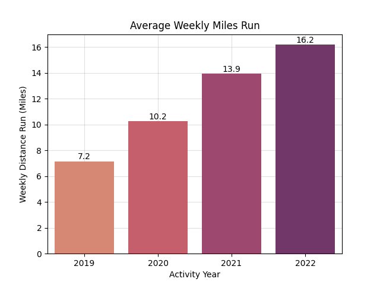
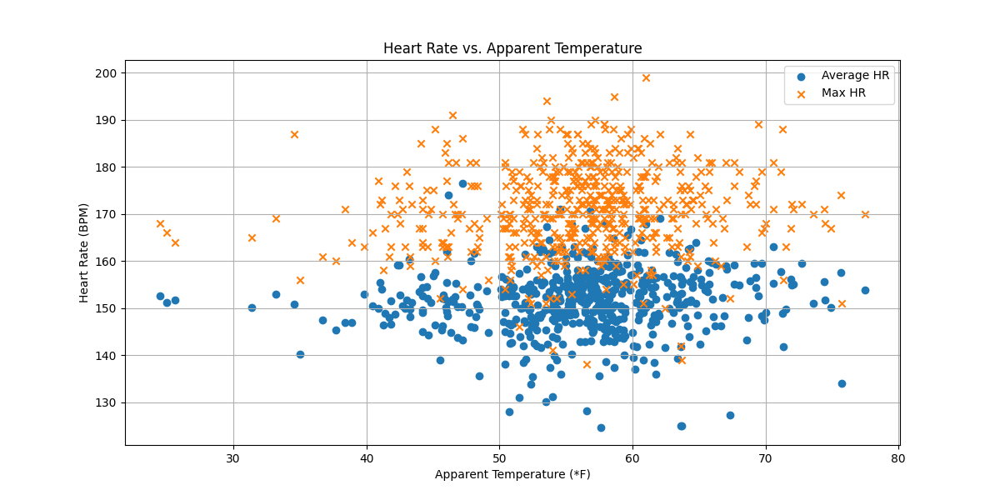
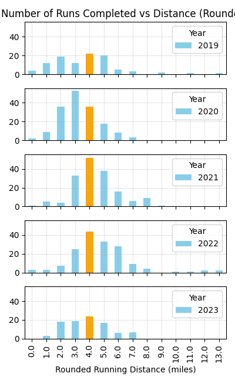

Running Analysis Using Strava Data
September 2023
Approximate reading time: 12 minutes
Related: How To Analyze Your Strava Data
Intro & Motivation
Being someone that loves to run and analyze data, it became an all-too-obvious exercise to obtain my Strava data and go to town analyzing it.
In this analysis, my goal was to analyze some of my historical Strava data to glean insights about my training. I wanted to reflect on both my running "wins" and areas where I could improve. I had many questions to investigate, but to focus my study, I had three main areas to address:
- Mileage & time run per week üèÉ‚Äç‚ôÄÔ∏è
- Influences on heart rate ♥️
- Pace over time ⏱
Background
I have been running since highschool, where I was captains of both cross country and long-distance track, and generally ran the 5K, 2-mile, or 1-mile. Since then, I mostly persued running on my own, though I was involved in several running clubs along the way, and made more than a few close friends through running. I did my first half marathon race in 2015, my second in 2019, and my third in 2022. I also did a handful of 5K and 10K races along the way, and managed to snag 3rd at the Rabbit Chase 5K Trail Race in 2023. In 2021, I started working with a running coach to take my running to another level.
Data Used
Strava activity data
October '18 - August '23
Garmin Forerunner 265S
March '23 - August '23
Garmin Vivoactive 3 Music
April '19 - March '23
Strava iOS App
October '18 - April '19
For the purposes of this analysis, I treated the provided data equally. I would assume, however, that the latest and greatest Garmin Forerunner I purchased would have the most accurate readings.
Results
In order to look into the three areas of study, I addressed the following questions.
Mileage & time run per week
How many miles per week did I run on average?
How many hours a week did I spend running each year?
First, to understand my weekly mileage distance, I grouped my data into weekly bins and summed across the weeks. Since 2018 and 2023 were incomplete years, I focused on the four full years of data I had -- 2019 through 2022.

Here you can see that my mileage increased fairly consistently year on year! This was cool to see, and certainly this is a clear and simple way to demonstrate my progress. In 2019, I was averaging just over 7 miles per week, whereas by 2022 I averaged over 16 miles per week. Particularly, when COVID hit in 2020, I took a bigger interest in running and this is reflected here with a 43% jump between 2019 and 2020. Weekly mileage increased by 36% between 2020 and 2021, and by 16% between 2021 and 2022. That slowdown in mileage buildup probably indicates something about what my "sweet spot" is for consistent, year-on-year running mileage. Using that information, I can speculate that I might do well with future low-season weeks at or slighlty below 16 mpw, whereas on-season training could build-up from there.
Knowing that mileage per week is not the only important metric, my next graphs will take a look at time spent running per week. This will also hopefully shed some insight on seasonality and patterns in my training.
One thing that immediately surprised me is that, for an activity I find myself spending a lot of time thinking and talking about, it actually has only taken up approximately 2-6 hours per week over these last four years. Said another way, that is about 5-15% of a typical work week. Of course, this data only shows moving time, meaning that any preparation (getting dressed, warming up, psyching myself up to head out the door), paused time (stop lights or water breaks), and post-run recovery (showering, snacking, etc) are not included here. And certainly, any other exercises - like strength exercises related to running - are not included here. Despite that, it is interesting to see how doing something a few hours a week can feel like such a big component of my day-to-day life. It goes to show how meaningful those handful of hours a week are to me. It also goes to show how a little bit of time can go a long way!
Aside from that, there were no clear and obvious seasonality trends to identify here. I thought maybe I would have run more in fall and spring, when the weather is best, and when I would be less likely to be on vacation. Mostly, you can see steady progressions as I increased running time over the years. You can see some training blocks where I was likely training for a race, and where there is a clear progression of mileage, followed by some tapering ahead of a race, and then finally a rest period afterwards. For example, weeks 12-23 in 2022 capture a half marathon training block and afterwards, you can see a recovery period.
If I were to extend this analysis, I would be curious to see how many hours a week are spent doing some of those other activities mentioned above. For example, when I started working with a coach in 2021, she strongly encouraged me to do strength workouts each week, so I'd likely have another 45-60 minutes of strength exercise logged per week to support my running. Additionally, I've had phases with other sports, like yoga, hiking/backpacking, boxing, and cycling. All these are not accounted for here but have a positive impact on my overall fitness and potentially even an impact on my running fitness.
Influences on heart rate
How does pace influence heart rate?
How does the weather influence heart rate?

Taking a look at the above chart of Heart Rate vs. Pace, we can see both average and maximum heart rate plotted against pace in minutes per mile. Looking at this, it seems clear that there is some trend there -- generally speaking, faster paces corresponded to higher average heart rate and higher maximum heart rate. Conversely, slower paces corresponded to lower heart rates. This makes sense with our intuition. When plotting trend lines on top of the data, you can see this general trend play out. My absolute maximum heart rate is 200-205 bpm, and most of my runs live in the 140-160 bpm range on average.
The trend lines shown are polynomials with degree of 3. I played with various degrees to see what fit best. With degree > 3, the R^2 value plateaued and the fit did not improve visually either. However, even with this polynomial of degree 3, the R^2 value was relatively low at 19% for the average heart rate, and 14% for the maximum heart rate. This indicates to me that the trend is there, but it is a weak one - and other factors, such as weather, current fitness, terrain, and distance of the run probably play a role too. My guess is that outside of pace, climate would be another major factor, so we'll investigate that next.

In this plot, I wanted to investigate the potential implications of the apparent temperature recorded during the run against my heart rate during the run. You can see that there is some correlation between apparent temperature and heart rate. There is a general upwards trend in heart rate as the apparent temperature goes up, and I've confirmed apparent temperature is statistically significant by looking at it's p-value (0.082) in an ordinary linear squares regression.
This next part surprised me however. I was expecting to see a strong trend between heart rate and apparent temperature, but no matter what way I sliced it, it was just not there. In fact, I tried out linear and polynomial regression to identify a trend, but the R^2 value came out shockingly low at 1% regardless of the degree selected. I wonder if I subconsciously slow down (and therefore, moderate my heartrate) in order to accomodate for the heat. I know for sure that I tend to avoid running in extreme weather, so maybe the lack of extreme temperature data points is making this trend harder to extract, too.
All of that to say, between these two variables, pace definitely takes the cake in terms of its impact on heart rate. Other variables must play a role as well. Having played around with the data a bit, it seemed like run distance and elevation also have a significant impact on heart rate, but since they also impact pace, it would be hard to beat pace alone. In the future, it would be interesting to take the analysis even further to understand how fitness (things like cummulative miles run in a recent backwindow) play a role in average heart rate.
* Note: Using a Garmin watch to measure my heart rate should generally be accurate within 5-10%, but using a chest strap heart rate monitor is definitely better. Replicating some of this with a more accurate HR monitor could alter these results.
Pace over time
Did my pace over time improve?
Admittedly, the above question is really trying to get at another, much more complicated question: did my fitness improve?
There are a number of factors that influence pace outside of fitness level: muscular fatigue, sleep quality, apparent temperature, stress levels, nutrition, and overall health, to name a few. For example, if I went out for the same run two times - once with perfect running temperature, where I was completely well rested and relaxed, having eaten the perfect breakfast, and coming back from a cutback week; and the other after a stressful, incredibly hot day where I barely ate, had terrible sleep, was fighting a cold, and just ran some extremely taxing workouts the days prior - you could guess which run would appear stronger.
And, on top of all of that, some days you just put in a bigger effort than others. Ninety-nine percent of the time, I am not racing, and just running to get out there and enjoy the outdoors. But you can bet that when I do race, I am going significantly faster than when I am training.
Now given all these factors, imagine, instead of two identical runs, I was comparing the pace from a 13 mile run versus a 3 mile run. You'd expect that the 13 mile run - being a challenge for me in and of itself - would likely be at a slower pace than the 3 mile run. Unless, of course, that was a half marathon race I was training for, and then we'd be all confused!
So, in order to investigate this with any sort of hope of gaining insight about my pace over time, I figured I needed to at least freeze some variables. And while I don't have information about everything, I do have information about how long each run was. Even if I did have all this other information available at my fingertips, fragmenting my running data by multiple metrics would leave me with very few similar-condition runs and make it therefore impossible to deduce any conclusions. Thus, I sought out to group runs by one common metric -- how long the runs were. To do this, I counted the number of runs within each distance bin, rounded to the nearest mile.

In this graph above, I plotted number of runs completed against the distance of the run, rounded to the nearest integer. You notice a number of things -- firstly, the distance of my runs got progressively longer between 2019, 2020, and 2021. Then, by 2022, there are a handful of double-dight runs thrown in too. 2023 was not a complete year, but I thought it would be valuable to look at in any case because you can see a similar pattern forming.
Throughout these years, it is pretty clear that my favorite running distance is around the four mile mark. I've highlighted this in orange for clarity. Even when I was generally running less, I still ran a fair amount of four mile runs. In 2021, I ran four-mile runs 52 times! In fact, with the exception of 2020, I ran more four mile runs than any other distance. Thus, in order to have some consistency in the runs I analyzed, I specifically focused on four mile runs to see how my pace varied over time. In the next graph, I plotted the pace for all of my recorded four mile runs against time.
This graph above has a lot of information on it, so I'll unpack it peice by peice. On the x-axis we have time, on the y-axis pace in minutes per mile. Each blue dot indicates a four mile run I completed (note, I rounded the activity data, so some runs technically may have been a little more or a little less than four miles). The red dashed line is a polynomial trend line, of degree 3. In this case, I saw a 14% R^2 value indicating the trend line can explain about 14% of the observed data points.
Making this graph, I was certainly hoping to see a strong trend downwards -- indicating I sped up over time, something to prove my fitness gains with! But that was not completely the case. What I found was that in 2019, my typical pace for a four mile run was around 10:30-11 minutes per mile, and by May 2023, when I stopped recording this data, the trend shows my pace hovering slightly below the 10:30 minutes/mile pace. However, in between those time periods was some up and down in terms of pace. From 2019 through the end of 2020 my pace did come down to around 10-10:30 minutes per mile, but in 2021 through the middle of 2022 that pace slowed down again back to 10:30-11 minutes per mile, and then eventually sped back up again through the end of 2022 and into 2023.
At first, analyzing this graph confused me, as I definitely felt major fitness gains throughout this time period. After all, I had some major wins, with a personal record (PR) for the 10K, a couple of solid half marathons thrown in, and 3rd place at a small local race. But when I piece these insights together with the insights from the start of this analysis, it makes sense. While I may have had some "slow-down" periods in my typical runs over time, overall, my every-day pace was relatively stable across the years. But what did change dramatically across the years was how much I was actually running, week after week. During this time period, I more than doubled my weekly mileage!
Considering that, I feel confident in answering the above questions: did my pace change over time? Slightly, yes. But did I gain fitness? I would argue that yes, I absolutely did, too. My pace may have changed slightly over the years, but today I can significantly outrun myself from 2019 with even a slightly faster pace. And ultimately, that is what the races have shown, too.
Conclusions
In this study, I analyzed three seperate but related components to my Strava running data: amount of time & miles run each week, the various influences on my heart rate during runs, and ultimately, my running pace over time.
From this, I have seen how my mileage increased year on year, and also how individual runs got progressively longer too. I spent between 2-6 hours per week running. Pace had an influence on my heart rate overall, and much more so than temperature alone. I saw fluctuations in my running pace over time, and I appear to have made some small improvements. I definitely emphasized building mileage during this time period, which will pay dividends in my long term running fitness. Most likely, if I start to emphasize speed, I would see my every-day pace drop more dramatically too. Given the increase in mileage corresponding with the pace fluctuations, I feel good about these indications on my fitness, and look forward to taking my running to the next level!